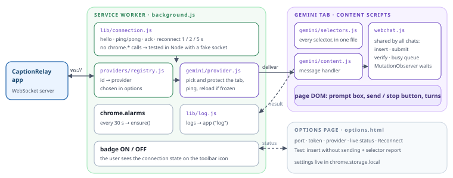
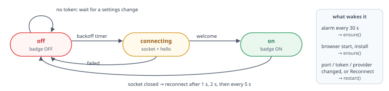

افزونه با JavaScript ساده نوشته شده (بدون build و بدون framework) و سه محیط اجرایی دارد که فقط با پیام با هم حرف میزنند: service worker که به اپ وصل است، content scriptها که داخل تب Gemini اجرا میشوند، و صفحهی تنظیمات.

| بخش | مسئولیت |
|---|---|
فایل connection.js | اتصال، دستدادن، ping، ack و اتصال دوباره. هیچ فراخوانی chrome.* ندارد؛ WebSocket، تایمرها و تنظیمات به آن تزریق میشوند، پس در Node با یک سوکت جعلی تست میشود (۱۱ تست). |
فایل background.js | سیمکشی: ساختن اتصال، رساندن هر send به provider فعال، badge و alarm، و پیامهای صفحهی تنظیمات. |
| رجیستری providerها | نگاشت شناسه به provider؛ اپ و پروتکل فقط نام آن را میبینند (فصل ۱۲). |
| اسکریپتهای صفحه | کار واقعی با DOM: پیدا کردن جعبهی ورودی، گذاشتن متن، زدن دکمه، تأیید، صف حالت مشغول. |
| صفحهی تنظیمات | پورت، توکن، provider، وضعیت زنده، دکمهی Reconnect و دکمهی Test. |
در Manifest V3 دیگر صفحهی پسزمینهی همیشگی وجود ندارد. Chrome یک service worker بیکار را بعد از حدود ۳۰ ثانیه متوقف میکند و هر وقت رویدادی بیاید دوباره اجرا میکند؛ با توقف آن، WebSocket هم بسته میشود. طراحی سه لایه محافظت دارد:
chrome.alarms هر ۳۰ ثانیه worker را بیدار میکند و ensure() را صدا میزند؛ اگر worker با وجود
همهچیز متوقف و دوباره اجرا شده باشد، اتصال برمیگردد.
وقتی تنظیمات عوض میشود، سوکت قبلی بسته و سوکت تازهای باز میشود. رویدادهای سوکت قدیمی (مثلاً onclose) ممکن
است بعد از باز شدن سوکت جدید برسند و وضعیت را خراب کنند. هر اتصال یک شمارهی نسل دارد و رویدادهای نسلهای قدیمی
نادیده گرفته میشوند. این یک الگوی ساده و رایج برای حذف race condition در کدهای رویدادمحور است.
کلید عمومی در manifest باعث میشود شناسهی افزونه روی هر کامپیوتر یکی باشد؛ بررسی Origin در اپ روی همین تکیه دارد.
فقط storage، alarms و scripting، و دسترسی میزبان فقط به gemini.google.com.
اتصال بلافاصله بعد از وارد کردن توکن؛ بعد از راهاندازی دوبارهی اپ، اتصال دوباره ۰٫۹ ثانیه بعد از بالا آمدن سرور؛ بعد از بستن و باز کردن Chrome، اتصال خودکار؛ چهار دقیقه بیکاری بدون قطع شدن.
The extension is plain JavaScript in three contexts that only exchange messages: the service worker holds the WebSocket, content scripts work with the Gemini page, and the options page edits settings. The connection logic has no chrome APIs — the socket, timers and settings are injected — so it is unit-tested in Node. Because MV3 can stop an idle worker, I keep it alive with 20-second pings, wake it with a 30-second alarm that re-ensures the connection, and reconnect with backoff. A generation counter ignores events from replaced sockets.